NPSAT Simulation
| main | Tutorials | Functions | website |
This tutorial contains all the steps involved in the NPSAT construction and implementation phase.
Contents
Problem description
In this example we will consider a hypothetical agricultural groundwater basin that is subject to a continuous contamination from agricultural activities. The goal of this example is to obtain water quality Breakthought Curves (BTC) for the pumping wells. The aquifer receives diffuse recharge from the various agricultural activities and from a network of streams.
The simulation domain is a rectangular area with dimensions 10 x 10 km and 400 m height with the top of the aquifer being at the elevation of 50 m above msl.
First we will describe the domain using a structure similar to the one that matlab uses for shapefiles
dom.Geometry = 'Polygon';
dom.X = [0 0 10000 10000 0 nan];
dom.Y = [0 10000 10000 0 0 nan];
For the streams we have already created a hypothetical stream network that consist of polygons. Note also that the shapefile contains fields about stream recharge rate and mesh properties
strm = shaperead('/DATA/Streams_exampl_buff');
For the diffuse recharge we assume that the basin is divided into 4 zones with recharge zones as shown in the following figure
plot(dom.X, dom.Y, '.-', 'linewidth',1.5) hold on mapshow(strm) plot([0 10000], [5000 5000],'--') plot([5000 5000], [0 10000],'--') text(2500,7500,'Zone 1 (0.0004 m/day)','HorizontalAlignment','center', 'FontSize',18) text(7500,7500,'Zone 2 (0.0003 m/day)','HorizontalAlignment','center', 'FontSize',18) text(2500,2500,'Zone 3 (0.0001 m/day)','HorizontalAlignment','center', 'FontSize',18) text(7500,2500,'Zone 2 (0.00005 m/day)','HorizontalAlignment','center', 'FontSize',18) axis([-100 10100 -100 10100]); axis equal; axis off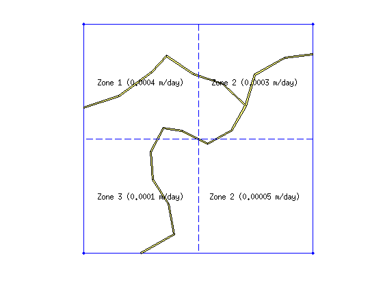
To generate a mesh that will take into account the boundaries of the recharge zones we have to create a shapefile structrure to hold the 4 recharge polygons
rch(1,1).Geometry = 'Polygon'; rch(1,1).X = [0 5000 5000 0 nan]; rch(1,1).Y = [0 0 5000 5000 nan]; rch(1,1).Rate = 0.0001; rch(2,1).Geometry = 'Polygon'; rch(2,1).X = [5000 10000 10000 5000 nan]; rch(2,1).Y = [0 0 5000 5000 nan]; rch(2,1).Rate = 0.00005; rch(3,1).Geometry = 'Polygon'; rch(3,1).X = [0 5000 5000 0 nan]; rch(3,1).Y = [5000 5000 10000 10000 nan]; rch(3,1).Rate = 0.0004; rch(4,1).Geometry = 'Polygon'; rch(4,1).X = [5000 10000 10000 5000 nan]; rch(4,1).Y = [5000 5000 10000 10000 nan]; rch(4,1).Rate = 0.0003;
Next we just make the polygons clockwise to suppress the warnings during polybool operations below. (The poly2cw function appears to removes the nans at the end and there are methods below which operate assuming that nans are present so we add them again)
for i = 1:size(rch,1) [rch(i,1).X, rch(i,1).Y] = poly2cw(rch(i,1).X, rch(i,1).Y); rch(i,1).X = [rch(i,1).X nan]; rch(i,1).Y = [rch(i,1).Y nan]; end
One of the assumptions of the NPSAT toolbox (see Kourakos et al., 2012) is that the model is steady state, therefore the mass balance should be very close to zero. So far we have described the positive water sources (diffuse rechagre and streams). To achieve a zero mass balance we will generate as many negative sources as needed to zero out the water balance. To do so we have to calculate first the positive sources.
For each recharge zone we will calculate the area and then subtract from this the stream area that crosses the recharge zone
Q_diffuse = 0; for i = 1:size(rch,1) Zone_area = polyarea(rch(i,1).X(1:end-1), rch(i,1).Y(1:end-1)); for j = 1:size(strm,1) [xi,yi] = polybool('intersection',rch(1,1).X(1:end-1), rch(1,1).Y(1:end-1),... strm(j,1).X(1:end-1), strm(j,1).Y(1:end-1)); if ~isempty(xi) Zone_area = Zone_area - polyarea(xi, yi); end end Q_diffuse = Q_diffuse + rch(i,1).Rate * Zone_area; end display(['Diffuse recharge: ' num2str(Q_diffuse) ' m^3/day']);
Diffuse recharge: 20938.1872 m^3/day
Then we will repeat a similar loop for the streams
Q_stream = 0; for i = 1:size(strm,1) Q_stream = Q_stream + ... polyarea(strm(i,1).X(1:end-1), strm(i,1).Y(1:end-1))*... strm(i,1).Q_rate; end display(['Stream recharge: ' num2str(Q_stream) ' m^3/day']);
Stream recharge: 8021.5332 m^3/day
Now that we know the amount of the incoming water we can generate as many wells as we need to balance out this amount. We can do that using a while loop. For each well we will generate the pumping rate and the its location. However there are two constraints to consider. The wells are not to allowed to be closer than 400 m and not allowed to be closer than 300 m to the streams and 500 m to the constant head boundary of the aquifer. The loop generates random locations and rates and each time this script is executed will generate a different scenario. To be able to repeat the analysis I have saved one random scenario that I can upload.
random_wells = false; if (random_wells) wellsXY=[]; % container for the well locations well_type = []; % true -> irrigation, false -> domestic cnt = 1; % well counter Q_tot_well = 0; % cumulative well pumping % make a list of the stream segments to calculate faster the distances % from the streams strmLines = []; for i = 1:size(strm,1) [xi, yi] = polysplit(strm(i,1).X, strm(i,1).Y); for j = 1:size(xi,1) for k = 1:length(xi{j,1}) - 1 strmLines = [strmLines; xi{j,1}(k) yi{j,1}(k) xi{j,1}(k+1) yi{j,1}(k+1)]; end end end % Loop until the Pumping is equal to recharge while (Q_tot_well < Q_stream + Q_diffuse) wells(cnt,1).Geometry = 'Point'; if cnt ==1 xw = 400 + (9600 - 400)*rand; % we dont want the wells very close yw = 400 + (9600 - 400)*rand; % to the boundaries else while 1 xw = 400 + (9600 - 400)*rand; yw = 400 + (9600 - 400)*rand; % find the distance between the dirichlet BC if pdist([xw yw;8500 5500]) < 500 continue; end % find the minimum distance to the existing wells dst = sqrt((xw - wellsXY(:,1)).^2 + (yw - wellsXY(:,2)).^2); if min(dst) < 400 continue; end % find the minimum distance from the streams dst = Dist_Point_LineSegment(xw,yw,strmLines); if min(dst) > 300 break; end end end % add this well wells(cnt,1).X= xw; wells(cnt,1).Y= yw; wellsXY = [wellsXY;xw yw]; if rand > 0.5; wells(cnt,1).Q = abs(normrnd(650,100)); wells(cnt,1).desc = 'irr'; wells(cnt,1).DistMin = 10; wells(cnt,1).DistMax = 500; wells(cnt,1).LcMin = 10; wells(cnt,1).LcMax = 200; wells(cnt,1).zt = min(normrnd(0,50), 10); wells(cnt,1).zb = wells(cnt,1).zt - max(normrnd(150,100), 50); if (wells(cnt,1).zb < -350) wells(cnt,1).zb = -300; end well_type(cnt,1) = true; else wells(cnt,1).Q = abs(normrnd(5,100)); wells(cnt,1).desc = 'dom'; wells(cnt,1).DistMin = 100; wells(cnt,1).DistMax = 500; wells(cnt,1).LcMin = 100; wells(cnt,1).LcMax = 500; wells(cnt,1).zt = min(normrnd(0,10), 20); wells(cnt,1).zb = wells(cnt,1).zt - max(normrnd(10,15), 5); if (wells(cnt,1).zb < -350) wells(cnt,1).zb = -300; end well_type(cnt,1) = false; end Q_tot_well = Q_tot_well + wells(cnt,1).Q; cnt =cnt +1; end else load ('/DATA/example_npsat1_wells'); end
The irrigation wells are plotted with red and the domestic wells with green circles
hold on plot(wellsXY(well_type==true,1), wellsXY(well_type==true,2),'or') plot(wellsXY(well_type==false,1), wellsXY(well_type==false,2),'og') title(['Number of wells: ' num2str(length(wellsXY))]); axis([-100 10100 -100 10100]); axis equal; axis off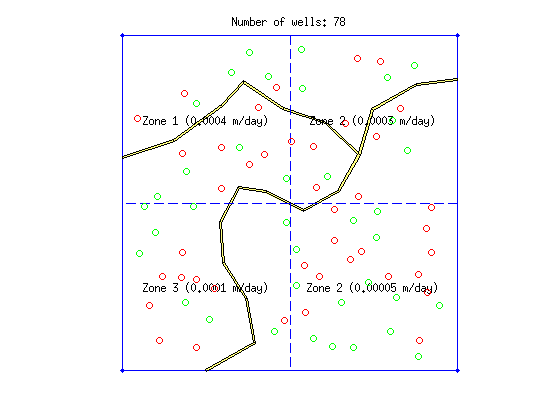
Mesh generation
Now that all the inputs of the geometry have been defined we can generate the mesh. As in any other example we start by initializing an empty CSG structure which will hold the data
NPSAT = CSGobj_v2(2,30,100,200,10);%Dim,Npoly,Nline,Npoints,usertol
The first feature to add must be always the domain outline.
NPSAT = NPSAT.readshapefile(dom);
Then we can read the remaining with any order
NPSAT = NPSAT.readshapefile(rch); NPSAT = NPSAT.readshapefile(strm); NPSAT = NPSAT.readshapefile(wells);
... and we can plot the contained features anytime
clf NPSAT.plotCSGobj; axis([-100 10100 -100 10100]); axis equal; axis off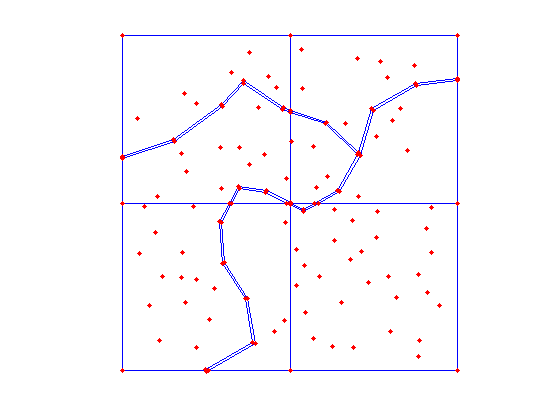
Next we define the mesh properties and write the Gmsh input file
meshopt=msim_mesh_options;
meshopt.lc_gen = 1000;
meshopt.embed_lines = 1;
meshopt.embed_points = 1;
NPSAT.writegeo('npsat_example',meshopt);
Finaly we run Gmsh to generate a 2D mesh and read it to matlab workspace. If we load the wells and have the mesh generated we can load the mesh instead generating
gen_mesh = true; if (gen_mesh) gmsh_path = '$HOME/Downloads/gmsh-2.12.0-Linux/bin/gmsh'; NPSAT.runGmsh('npsat_example',gmsh_path,[]) [p2D, MSH2D]=read_2D_Gmsh('npsat_example'); else load('example1_mesh') end display(['2D Mesh info: #Nodes: ' num2str(size(p2D,1)) ' #Elements: ' num2str(size(MSH2D(3,1).elem(1,1).id,1)) ])
Info : Running '/home/giorgk/Downloads/gmsh-2.12.0-Linux/bin/gmsh npsat_example.geo -2' [Gmsh 2.12.0, 1 node, max. 1 thread] Info : Started on Fri Jul 1 09:57:41 2016 Info : Reading 'npsat_example.geo'... Info : Done reading 'npsat_example.geo' Info : Meshing 1D... Info : Meshing curve 1 (Line) Info : Meshing curve 2 (Line) Info : Meshing curve 3 (Line) Info : Meshing curve 4 (Line) Info : Meshing curve 5 (Line) Info : Meshing curve 6 (Line) Info : Meshing curve 7 (Line) Info : Meshing curve 8 (Line) Info : Meshing curve 9 (Line) Info : Meshing curve 10 (Line) Info : Meshing curve 11 (Line) Info : Meshing curve 12 (Line) Info : Meshing curve 13 (Line) Info : Meshing curve 14 (Line) Info : Meshing curve 15 (Line) Info : Meshing curve 16 (Line) Info : Meshing curve 17 (Line) Info : Meshing curve 18 (Line) Info : Meshing curve 19 (Line) Info : Meshing curve 20 (Line) Info : Meshing curve 21 (Line) Info : Meshing curve 22 (Line) Info : Meshing curve 23 (Line) Info : Meshing curve 24 (Line) Info : Meshing curve 25 (Line) Info : Meshing curve 26 (Line) Info : Meshing curve 27 (Line) Info : Meshing curve 28 (Line) Info : Meshing curve 29 (Line) Info : Meshing curve 30 (Line) Info : Meshing curve 31 (Line) Info : Meshing curve 32 (Line) Info : Meshing curve 33 (Line) Info : Meshing curve 34 (Line) Info : Meshing curve 35 (Line) Info : Meshing curve 36 (Line) Info : Meshing curve 37 (Line) Info : Meshing curve 38 (Line) Info : Meshing curve 39 (Line) Info : Meshing curve 40 (Line) Info : Meshing curve 41 (Line) Info : Meshing curve 42 (Line) Info : Meshing curve 43 (Line) Info : Meshing curve 44 (Line) Info : Meshing curve 45 (Line) Info : Meshing curve 46 (Line) Info : Meshing curve 47 (Line) Info : Meshing curve 48 (Line) Info : Meshing curve 49 (Line) Info : Meshing curve 50 (Line) Info : Meshing curve 51 (Line) Info : Meshing curve 52 (Line) Info : Meshing curve 53 (Line) Info : Meshing curve 54 (Line) Info : Meshing curve 55 (Line) Info : Meshing curve 56 (Line) Info : Meshing curve 57 (Line) Info : Meshing curve 58 (Line) Info : Meshing curve 59 (Line) Info : Meshing curve 60 (Line) Info : Meshing curve 61 (Line) Info : Meshing curve 62 (Line) Info : Meshing curve 63 (Line) Info : Meshing curve 64 (Line) Info : Meshing curve 65 (Line) Info : Meshing curve 66 (Line) Info : Meshing curve 67 (Line) Info : Meshing curve 68 (Line) Info : Meshing curve 69 (Line) Info : Meshing curve 70 (Line) Info : Meshing curve 71 (Line) Info : Meshing curve 72 (Line) Info : Meshing curve 73 (Line) Info : Meshing curve 74 (Line) Info : Meshing curve 75 (Line) Info : Meshing curve 76 (Line) Info : Meshing curve 77 (Line) Info : Meshing curve 78 (Line) Info : Meshing curve 79 (Line) Info : Meshing curve 80 (Line) Info : Meshing curve 81 (Line) Info : Meshing curve 82 (Line) Info : Meshing curve 83 (Line) Info : Meshing curve 84 (Line) Info : Meshing curve 85 (Line) Info : Meshing curve 86 (Line) Info : Meshing curve 87 (Line) Info : Meshing curve 88 (Line) Info : Meshing curve 89 (Line) Info : Meshing curve 90 (Line) Info : Meshing curve 91 (Line) Info : Meshing curve 92 (Line) Info : Meshing curve 93 (Line) Info : Meshing curve 94 (Line) Info : Meshing curve 95 (Line) Info : Meshing curve 96 (Line) Info : Meshing curve 97 (Line) Info : Done meshing 1D (0.328 s) Info : Meshing 2D... Info : Meshing surface 1 (Plane, Delaunay) Info : Done meshing 2D (1.55975 s) Info : 15338 vertices 32662 elements Info : Writing 'npsat_example.msh'... Info : Done writing 'npsat_example.msh' Info : Stopped on Fri Jul 1 09:57:43 2016 Reading points... Reading Elements... 2D Mesh info: #Nodes: 15336 #Elements: 30436
In Matlab it's easy to visualize relatively small triangular meshes
clf triplot(MSH2D(3,1).elem(1,1).id, p2D(:,1), p2D(:,2)); axis([-100 10100 -100 10100]); axis equal; axis off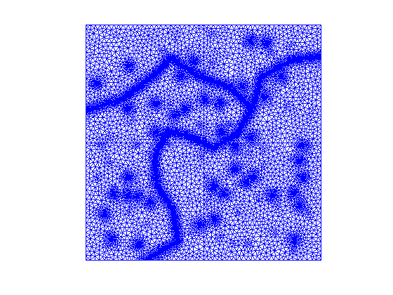
The last step in mesh generation is to extrude the mesh. The initial top elevation is set to 50 meters above msl and the bottom to -350 m. Vertically the domain will be split into 15 layers which are distributed so that near the water table there is a higher density of layers. To this end we will make use of the Centerfor2points function. For detailed explanation and usage see the help of this function
Nlay = 15;
zLayfnc = inline('yo+sqrt(r^2-(x-xo).^2)');
[c1 ,~] = Centerfor2points([0 0], [1 1], 1.6);
t = sort(zLayfnc(1.6, linspace(0,1,Nlay), c1(1), c1(2)));
plot(0,t,'.r')
axis([-1 1 0 1])
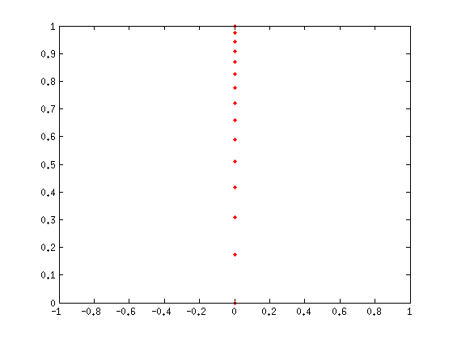 top_elev = 50*ones(size(p2D,1),1);
bot_elev = -350*ones(size(p2D,1),1);
[p3D, MSH3D]=extrude_mesh(p2D, MSH2D, top_elev, bot_elev, t, 'linear');
To visualize properly a 3D mesh we have to use an external software such as paraview or visit. Both can read vtk files. Therefore we first print the mesh into a vtk file and then we can load it to the software to display it
WriteVtkMesh('npsat_example_mesh',MSH3D(4, 1).elem.id, p3D, [], [], 'prism');
Writing Nodes coord... Writing Elements...
Below is a screenshot of the 3D mesh taken from paraview
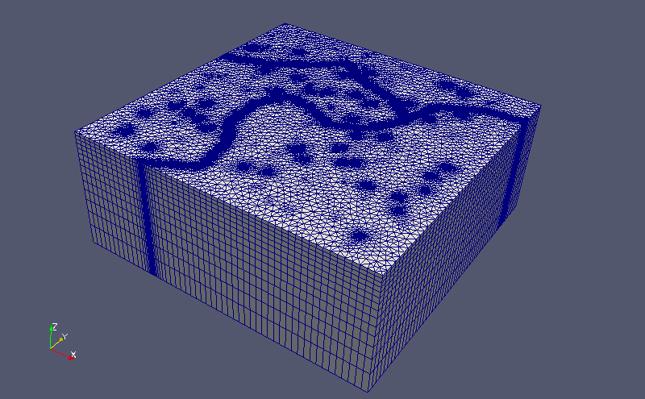
Flow Simulation
Typicaly diffuse pollution takes place in basins with unconfined aquifers beneath, therefore we will assume that the aquifer of this hypothetical example is also unconfined. To simulate the flow field of a phreatic aquifer we have to use a loop where the conductunce matrix of the system will be adapted according to the simulation results of the previous step. The loop will continue until the changes in the water table are very small during two consequtive iterations.
In this example, the diffuse and stream recharge does not depend on the water table elevation yet the stresses from the wells have to be adapted every iteration because as the water table adapts the mesh nodes that are associated with the pumping may also change.
To assign diffuse or stream recharge to the elements we will find their barycenters and then look up in which recharge/stream polygon the barycenter falls in.
bary_el = Calc_Barycenters(p2D, MSH2D(3,1).elem.id);
The elements associated with the recharge are all the triangles of the top layer. These are equal to the number of elements of the 2D mesh
Rch_Val = zeros(length(MSH2D(3,1).elem.id),1);
Next we will loop through the stream and recharge polygons and identify the element ids that fall into each polygon. The elements that receive stream recharge will not receive diffuse recharge.
id_strm_list = []; for i = 1:size(strm) id_temp = find(inpolygon(bary_el(:,1), bary_el(:,2), strm(i,1).X, strm(i,1).Y)); Rch_Val(id_temp, 1) = strm(i,1).Q_rate; id_strm_list = [id_strm_list; id_temp]; end
for i = 1:size(rch,1) id_temp = find(inpolygon(bary_el(:,1), bary_el(:,2), rch(i,1).X, rch(i,1).Y)); % exclude the stream polygons id_temp = setdiff(id_temp, id_strm_list); Rch_Val(id_temp, 1) = rch(i,1).Rate; end
Next we create a structure that mSim uses to pass element recharge.
F_rch(1,1).id = (1:length(MSH2D(3,1).elem.id))'; F_rch(1,1).val = Rch_Val; F_rch(1,1).dim = 2; F_rch(1,1).el_type='triangle'; F_rch(1,1).el_order='linear';
After the MSH2D is extruded into 3D two types of 2D elements are generated: triangles and quadrilaterals. The following index tell us that the indices in the field .id correspond to the following array MSH3D(F_rch(1,1).dim+1).elem(F_rch(1,1).id_el,1).id
F_rch(1,1).id_el=2;
Now we are ready to assemble the diffuse recharge. Since there are no General Head Boundary conditions the length of the stress vector will be equal to size(p3D,1)
F_rch_assmbled = Assemble_RHS(size(p3D,1), p3D, MSH3D, F_rch);
Next we have to define the hydraulic conductivity and assign the constant head boundary conditions (Dirichlet boundary conditions). We will assume a uniform horizontal hydraulic conductivity equal to 50 m/day and 0.5 m/day vertical hydraulic conductivity.
K = [50*ones(size(p3D,1),1) 0.5*ones(size(p3D,1),1)];
Note that two-column K matrix is interpreted as Kx=Ky~=Kz. 3-column matrix corresponds to fully anisotropic Kx~=Ky~=Kz and Single column matrix corresponds to isotropic case Kx=Ky=Kz.
For the boundary conditions we will assume a small region of constant head around the rectangle given by the following coordinates
BC_rect = [8250 5250;8750 5250;8750 5750;8250 5750;8250 5250]; id_bc = find(inpolygon(p3D(:,1), p3D(:,2), BC_rect(:,1), BC_rect(:,2)));
This will return all the nodes on all layers that are inside the BC_rect rectangle. However the boundary conditions will be assigned only to the top layer nodes. The top layer ids span from 1 to size(p2D,1). Therefore we have to remove the remaining ids from the list. Those nodes will have constant head of 50 m
id_bc(id_bc>size(p2D,1),:) = []; CH = [id_bc 50*ones(length(id_bc),1)];
Unconfine Flow Simulation
The unconfined flow simulation requires the mesh to be adapted to the water table. To this end we will use a loop.
First lets define a structure with the simulation options
simopt.dim = 3; simopt.el_order = 'linear'; simopt.el_type = 'prism';
a variable that will help with the mesh adaptation procedure
Z = nan(size(p2D,1),Nlay);
and a variable to count the iterations
iter = 1;
Next comes the body of the main loop
while 1 % Before solving we have to assign to the mesh nodes the well fluxes F_wls = zeros(size(p3D,1),1); for i = 1:size(wells,1) % find the mesh nodes with the same X and Y as this well id_nodes = find(sqrt((wells(i,1).X - p3D(:,1)).^2 + (wells(i,1).Y - p3D(:,2)).^2) < 1); if isempty(id_nodes) warning(['Well with id' num2str(i) ' NOT FOUND']) end %find the mesh nodes that correspond to the well screen id_well = find(p3D(id_nodes,3) <= wells(i,1).zt & ... p3D(id_nodes,3) >= wells(i,1).zb); % if there are less than 2 mesh nodes inside the well screen find % the two closer to the well screen mean elevation if length(id_well) < 2 [c, d] = sort(abs(p3D(id_nodes,3) - (wells(i,1).zt + wells(i,1).zb)/2)); id_well = d(1:2); end F_wls(id_nodes(id_well),1) = -abs(wells(i,1).Q)/length(id_well); end % Now we can assemble the conductance matrix [Kglo, H]= Assemble_LHS(p3D, MSH3D(4,1).elem(1,1).id, K , CH, [], simopt); % ... and finally solve the system Hnew=solve_system(Kglo, H, F_rch_assmbled + F_wls); % calculate the error err(iter,1) = mean(abs(Hnew(1:size(p2D,1)) - p3D(1:size(p2D,1),3))); if err(iter,1) < 0.1 break end % if the error is greater that the threshold specified above we % adapt the mesh so that the top layer is equal with the head elevation Z(:,1) = Hnew(1:size(p2D,1)); Z(:,Nlay) = p3D((Nlay-1)*size(p2D,1)+1:end,3); Z =bsxfun(@times,Z(:,1),1-t) + bsxfun(@times,Z(:,end),t); p3D(:,3) = reshape(Z,Nlay*size(p2D,1),1); iter = iter + 1; end
plot(err) xlabel('# iteration') ylabel('Error [m]')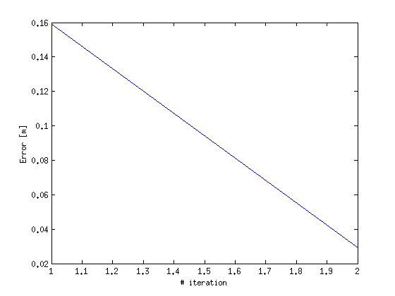
Finally we can write the results to a vtk file and display the mesh for example in paraview
The hydraulic head is defined on nodes.
propND(1,1).name = 'head'; propND(1,1).val = Hnew; propND(1,1).type = 'scalars';
Although the uniform hydraulic conductivity does not produce any interesting figures we printed the information as an example on how to add more properties
propND(2,1).name = 'HorCond'; propND(2,1).val = K(:,1); propND(2,1).type = 'scalars'; propND(3,1).name = 'VertCond'; propND(3,1).val = K(:,2); propND(3,1).type = 'scalars'; WriteVtkMesh('npsat_example_solution',MSH3D(4,1).elem(1,1).id,p3D,propND,[],'prism')
Writing Nodes coord... Writing Elements... Writing head... Writing HorCond... Writing VertCond...
The hydraulic head distribution is shown in the figure below. Because of the scale of the problem the mesh adaptation is not apparent unless the domain is scaled in the z direction. Here we show just a part of the aquifer with a stream and few wells.
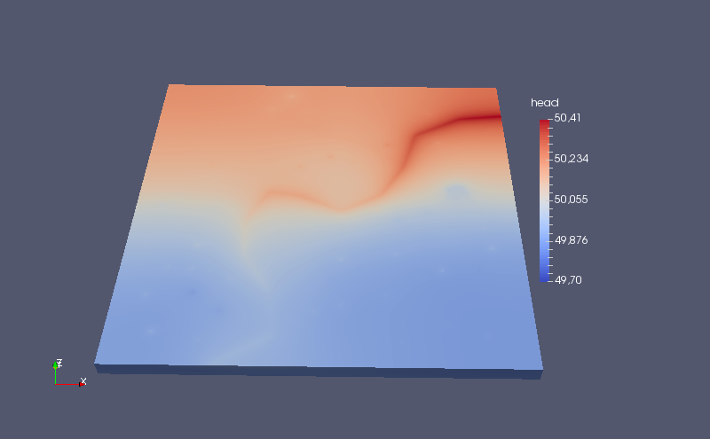
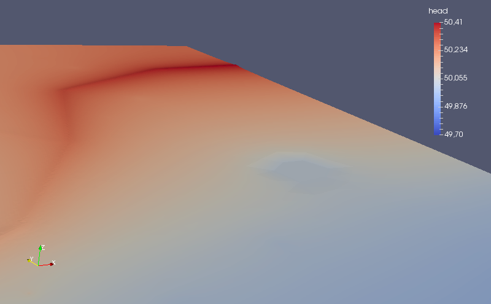
Particle Tracking
Once the hydraulic head field has been computed we can use it for particle tracking. In NPSAT we release particles from the sinks (wells) and using backward particle tracking we can identify their source associated with each sink.
First we will generate the initial positions around the wells. For the irrigation wells we will distribute the particles into 25 layers, with 4 particles on each layer.
prtopt.radius = 10;% distance from the well point prtopt.Nl = 25; %number of layers prtopt.Nppl = 4; %number of particles per layer [xp_ir, yp_ir, zp_ir, well_id_ir] = distribute_particle_wells(wells(well_type == 1), prtopt);
For the domastic wells we will distribute the particles into 8 layers, with 4 particles each.
prtopt.radius = 10;% distance from the well point prtopt.Nl = 8; %number of layers prtopt.Nppl = 4; %number of particles per layer [xp_dm, yp_dm, zp_dm, well_id_dm] = distribute_particle_wells(wells(well_type == 0), prtopt);
Finally before running the particle tracking we have to adjust few data
First we need to build the mesh connectivity matrix. This is one of the very few mSim functions that dont have script code alternative. Even the c version is time consuming but needs to run only once for each mesh.
B = Build2Dmeshinfocpp(MSH2D(3,1).elem.id');
The mSim is based on the premise that the 3D meshes are 2D meshes extruded into several layers. Therefore the x-y coordinates will be identical for all layers. In the particle tracking function we pass the node coordinates as follows:
XY = p2D(:,1:2); Z = reshape(p3D(:,3),size(XY,1),Nlay);
where each column of Z correspond to elevation of one layer.
Similarly for the hydraulic head and conductivity
Hnew = reshape(Hnew,size(XY,1),Nlay);
Kprt{1,1} = reshape(K(:,1),size(XY,1),Nlay);
Kprt{2,1} = reshape(K(:,2),size(XY,1),Nlay);
Last we define few particle tracking options. Here we will use the default options, except the mode. We want to run the serial cpp because it is faster (see particle tracking tutorial )
trackopt = part_options;
trackopt.mode = 'cpp';
First we run backward particle tracking for the domestic wells:
[XYZdm, Vdm, exitflagdm]=ParticleTracking_main([xp_dm yp_dm zp_dm], XY, Z,...
MSH2D(3,1).elem.id, B, Hnew, Kprt, 0.1, trackopt);
For a small number of streamlines we can use matlab's default methods to visualize the streamlines. Yet the plot is not that pretty. We see however that most of the domestic wells receive the water from their immediate vincinity except few deeper ones
clf streamline(XYZdm) view(73,24)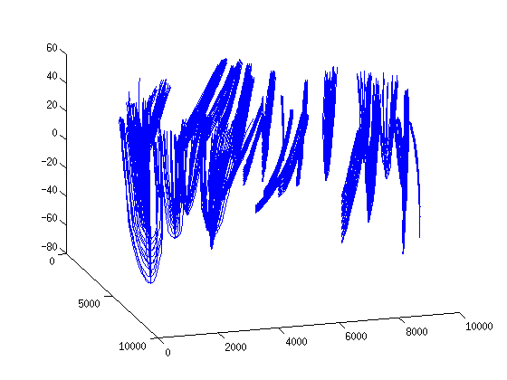
and then we run the backward particle tracking for the irrigation wells:
[XYZir, Vir, exitflagir]=ParticleTracking_main([xp_ir yp_ir zp_ir], XY, Z,...
MSH2D(3,1).elem.id, B, Hnew, Kprt, 0.1, trackopt);
The same plot for the irrigation wells is quite messy because there are approximately 4000 streamline which the majority run almost across the eniter aquifer.
streamline(XYZir) view(73,24)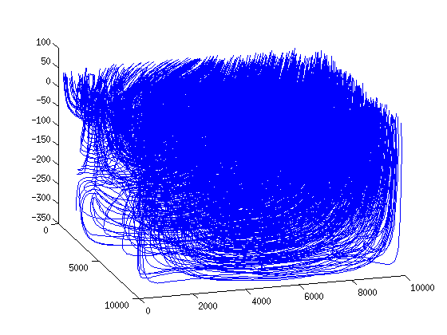
Compute URFs
The next step to backward particle tracking is to simulate the 1D ADE for each streamline assuming a unit input loading and compute a Unit Response Function (URF)
To do so we define a structure where we pass few options related to transport modeling such as the discretization along the streamline dx, the time discretization dt and the total simulation time Ttime.
topt.dx = 20; % [m] topt.dt = 1; % [years] topt.Ttime = 200; % [years]
It is always a good practice to allocate space to speed up the computations
URFdm = zeros(size(XYZdm,1), topt.Ttime);
and finally to compute the URFs for the domestic wells we use the following mSim function
for i = 1:size(XYZdm,1) URFdm(i,:)=ComputeURF(XYZdm{i,1},Vdm{i,1},topt); end
Below we plot the URFs for 4 dometic wells
clf id = well_id_dm == 37; subplot(2,2,1);semilogx(URFdm(id,:)'); axis([0 200 0 0.1]); grid on title(['Domestic well #' num2str(1)]);ylabel('Concentration C/C_{o}') id = well_id_dm == 13; subplot(2,2,2);semilogx(URFdm(id,:)'); axis([0 200 0 0.1]); grid on title(['Domestic well #' num2str(13)]) id = well_id_dm == 7; subplot(2,2,3);semilogx(URFdm(id,:)'); axis([0 200 0 0.1]); grid on title(['Domestic well #' num2str(7)]);ylabel('Concentration C/C_{o}') xlabel('Time [years]') id = well_id_dm == 34; subplot(2,2,4);semilogx(URFdm(id,:)'); axis([0 200 0 0.1]); grid on title(['Domestic well #' num2str(34)]);xlabel('Time [years]') drawnow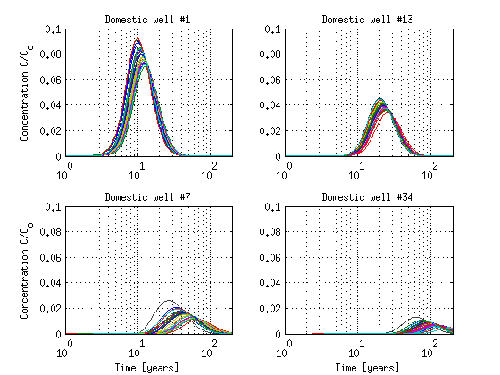
We repeate the steps above for the irrigation wells
URFir = zeros(size(XYZir,1), topt.Ttime); for i = 1:size(XYZir,1) URFir(i,:)=ComputeURF(XYZir{i,1},Vir{i,1},topt); end
and plot few representative URFs for the irrigation wells
clf id = well_id_ir == 21; subplot(2,2,1);semilogx(URFir(id,:)'); axis([0 200 0 0.5]); grid on title(['Irrigation well #' num2str(1)]);ylabel('Concentration C/C_{o}') id = well_id_ir == 28; subplot(2,2,2);semilogx(URFir(id,:)'); axis([0 200 0 0.5]); grid on title(['Irrigation well #' num2str(13)]) id = well_id_ir == 33; subplot(2,2,3);semilogx(URFir(id,:)'); axis([0 200 0 0.5]); grid on title(['Irrigation well #' num2str(50)]);ylabel('Concentration C/C_{o}') xlabel('Time [years]') id = find(well_id_ir == 35); subplot(2,2,4);semilogx(URFir(id,:)'); axis([0 200 0 0.5]); grid on title(['Irrigation well #' num2str(103)]);xlabel('Time [years]') drawnow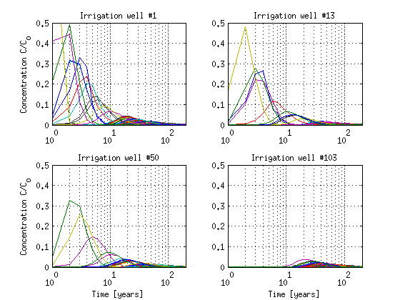
Forward implementation
The computation of URFs concludes the construction phase of NPSAT. Now we can use the URFs to make predictions for any given loading function.
Loading scenario
We will assume a spatially uniform loading that varies with time. In particular from 1941 - 1980 there will be an increase of loading from 5 to 25 kg/ha/year. The next twenty years the rate of increase will be greater with a linear increase from 25 to 75 kg/ha/year and then the loading will decrease at a steady rate.
years = 1941:2140; LF = zeros(1,200); LF(1:20) = linspace(5,25,20); LF(20:40) = linspace(25,75,21); LF(40:end) = linspace(75,50,161); clf plot(years, LF) ylabel('Loading history [kg/ha/year]') xlabel('Years')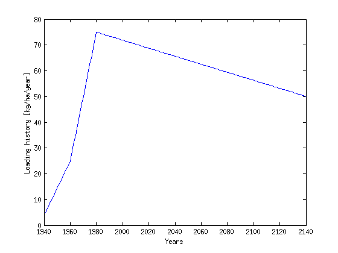
Next we need to convert the loading input from Mass to concentration by dividing the loading Mass with the groundwater recharge. To this end, we have to find the recharge rate for the last point of each streamline. Note that the last point is the exit point of the streamline near the water table, while the first point is the one near the well. In addition we will need later to calculate the contribution of each streamline to the well based on the velocities at the well side of the streamline.
Rch_dm = zeros(size(XYZdm,1),1); endpnt_dm = zeros(size(XYZdm,1),3); Vel_dm = zeros(size(XYZdm,1),1); for i = 1 : size(XYZdm,1) endpnt_dm(i,:) = XYZdm{i,1}(end,:); Vel_dm(i,1) = sqrt(sum(Vdm{i,1}(1,:).^2)); end Rch_ir = zeros(size(XYZir,1),1); endpnt_ir = zeros(size(XYZir,1),3); Vel_ir = zeros(size(XYZir,1),1); for i = 1 : size(XYZir,1) endpnt_ir(i,:) = XYZir{i,1}(end,:); Vel_ir(i,1) = sqrt(sum(Vir{i,1}(1,:).^2)); end
The endpnt_xxx variable holds the coordinates of the points where the recharge water enters the aquifer for each streamline. Next we loop through the stream and recharge polygons. The streamlines that originate from the the streams have zero concentration while ther remaining get their input concentration by dividing the Mass with the respective recharge rate
for i = 1:size(rch,1) in = inpolygon(endpnt_dm(:,1), endpnt_dm(:,2), ... rch(i,1).X, rch(i,1).Y); Rch_dm(in,1) = rch(i,1).Rate; in = inpolygon(endpnt_ir(:,1), endpnt_ir(:,2), ... rch(i,1).X, rch(i,1).Y); Rch_ir(in,1) = rch(i,1).Rate; end for i = 1:size(strm,1) in = inpolygon(endpnt_dm(:,1), endpnt_dm(:,2), ... strm(i,1).X, strm(i,1).Y); Rch_dm(in,1) = 0; in = inpolygon(endpnt_ir(:,1), endpnt_ir(:,2), ... strm(i,1).X, strm(i,1).Y); Rch_ir(in,1) = 0; end
The previous loop identified the recharge rate for each streamline and the units are in m/day. We convert this to m/year
Rch_dm = Rch_dm * 365; Rch_ir = Rch_ir * 365;
Then we convert it to m^3/ha/year
Rch_dm = Rch_dm*10000; Rch_ir = Rch_ir*10000;
and then divide the Mass with the recharge to convert it to concentration
LF_dm = bsxfun(@rdivide, LF,Rch_dm); LF_dm(isinf(LF_dm)) = 0; LF_ir = bsxfun(@rdivide, LF,Rch_ir); LF_ir(isinf(LF_ir)) = 0;
Therefore the actual loading functions are now grouped into 4 categories as shown below (the plot is identical for the irrigation wells)
clf plot(years,1000*LF_dm');ylabel('Concnetration [mg/L]'); xlabel('Years'); title('Domestic wells')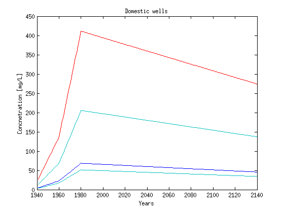
Forward predictions
Once the loading functions have the approprieate format we can convolute them with the URFs.
First we identify the id of the streamlines that correspond to each well, and then we convolute the URF with the loading functions to compute the average well breakthrough curve (BCT) based on the flow contribution of each streamline. The flow contribution is taken analogous to the velocity of the streamline at the well side. Note that the particles are uniformly distributed around the well screen length and we assume that the flow contribution of each streamline is equal to the velocity (The area is the same for all the streamlines)
This is the convolution loop for the domestic wells:
for i = 1: max(well_id_dm) id = find(well_id_dm == i); if ~isempty(id) load_func = LF_dm(id,:); urfs = URFdm(id,:); temp_BTC = ConvoluteURF(urfs,load_func,'cpp'); BTCdm(i,:) = sum(bsxfun(@times, temp_BTC, Vel_dm(id,1)),1)./sum(Vel_dm(id,1)); end end
and we repeat the same loop for the irrigation wells
for i = 1: max(well_id_ir) id = find(well_id_ir == i); if ~isempty(id) load_func = LF_ir(id,:); urfs = URFir(id,:); temp_BTC = ConvoluteURF(urfs,load_func,'cpp'); BTCir(i,:) = sum(bsxfun(@times, temp_BTC, Vel_ir(id,1)),1)./sum(Vel_ir(id,1)); end end
Plot results
To plot the results we will group the wells into 4 groups that correspond to the 4 recharge zones. The variable well_zone will have 4 rows one for each recharge group and 2 columns. The first column corresponds to domestic wells and the second to the irrigation wells.
id_dm = find(well_type == 0); id_ir = find(well_type == 1); for i = 1:size(rch,1) in = inpolygon(wellsXY(:,1), wellsXY(:,2), rch(i,1).X, rch(i,1).Y); temp = find(well_type == 0 & in); [C,ia,ib] = intersect(temp,id_dm); well_zone{i,1} = ib; temp = find(well_type == 1 & in); [C,ia,ib] = intersect(temp,id_ir); well_zone{i,2} = ib; end
The following plot shows the BTC for all wells. However the color line for each BTC corresponds to a recharge group. By default Matlab associates each line with a legend name. However here we want to group the lines and have the legend showning one name for each group. The following lengthy snippet does exactly that.
clf clr = [1 0 0; 0 0 1; 0 1 0; 0 1 1]; subplot(2,1,1);hold on zone1Lines = plot(years,1000*BTCdm(well_zone{1,1},:),'color', clr(1,:)); zone2Lines = plot(years,1000*BTCdm(well_zone{2,1},:),'color', clr(2,:)); zone3Lines = plot(years,1000*BTCdm(well_zone{3,1},:),'color', clr(3,:)); zone4Lines = plot(years,1000*BTCdm(well_zone{4,1},:),'color', clr(4,:)); zone1group = hggroup; zone2group = hggroup; zone3group = hggroup; zone4group = hggroup; set(zone1Lines,'Parent',zone1group) set(zone2Lines,'Parent',zone2group) set(zone3Lines,'Parent',zone3group) set(zone4Lines,'Parent',zone4group) set(get(get(zone1group,'Annotation'),'LegendInformation'),'IconDisplayStyle','on'); set(get(get(zone2group,'Annotation'),'LegendInformation'),'IconDisplayStyle','on'); set(get(get(zone3group,'Annotation'),'LegendInformation'),'IconDisplayStyle','on'); set(get(get(zone4group,'Annotation'),'LegendInformation'),'IconDisplayStyle','on'); axis([1940 2140 0 200]) ylabel('Concentration [mg/L]') title('BTCs for domestic wells') grid on legend(['Zone ' num2str(rch(1,1).Rate)],... ['Zone ' num2str(rch(2,1).Rate)],... ['Zone ' num2str(rch(3,1).Rate)],... ['Zone ' num2str(rch(4,1).Rate)],... 'Location','EastOutside') % The above code is repeated for the irrigation wells using a more compact % form subplot(2,1,2);hold on for i = 1:4 eval(['zone' num2str(i) 'Lines = plot(years,1000*BTCir(well_zone{' num2str(i) ',2},:), ''color'', clr(' num2str(i) ',:));']) eval(['zone' num2str(i) 'group = hggroup;']); eval(['set(zone' num2str(i) 'Lines,''Parent'',zone' num2str(i) 'group);']) eval(['set(get(get(zone' num2str(i) 'group,''Annotation''),''LegendInformation''),''IconDisplayStyle'',''on'');']) end axis([1940 2140 0 100]) xlabel('Years') ylabel('Concentration [mg/L]') title('BTCs for irrigation wells') grid on legend(['Zone ' num2str(rch(1,1).Rate)],... ['Zone ' num2str(rch(2,1).Rate)],... ['Zone ' num2str(rch(3,1).Rate)],... ['Zone ' num2str(rch(4,1).Rate)],... 'Location','EastOutside')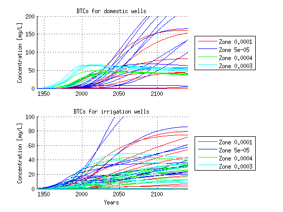